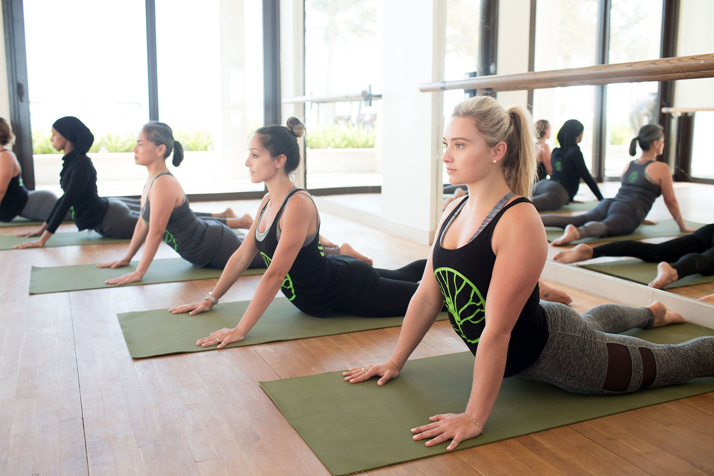
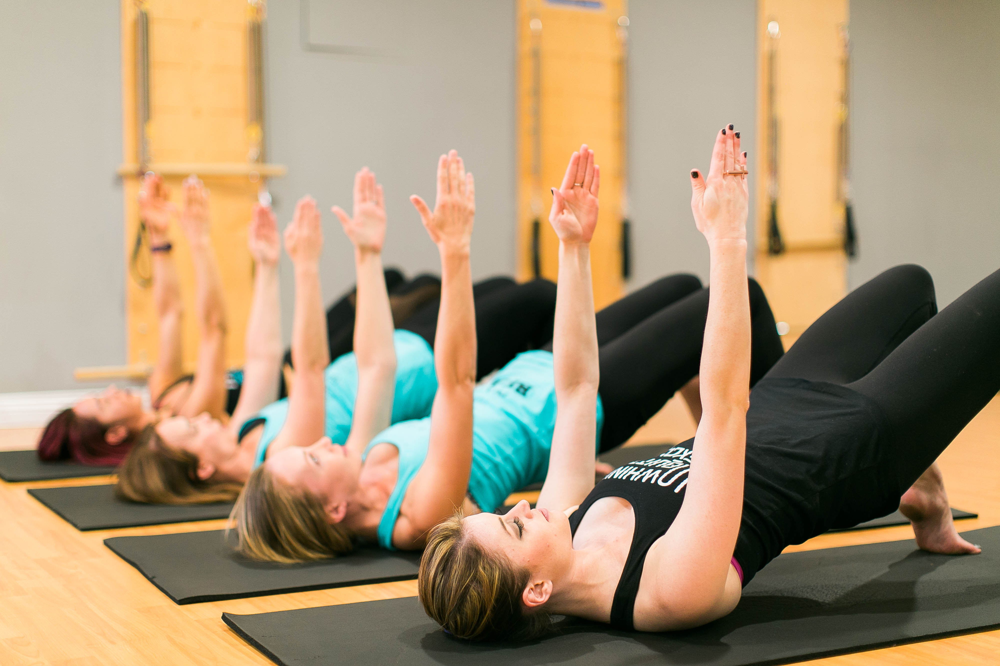
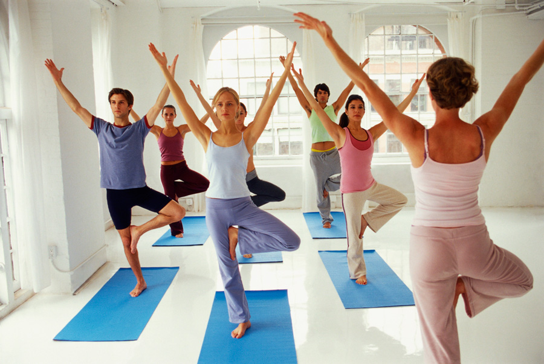
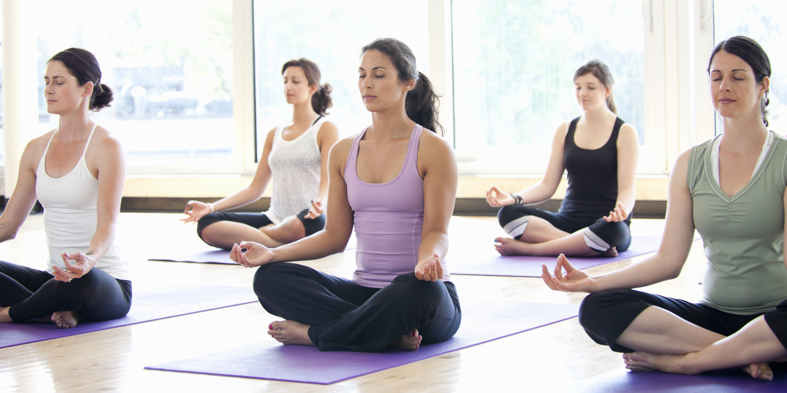
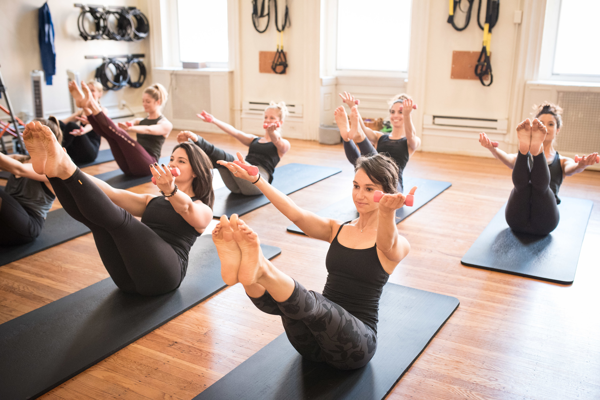

Назва гімнастики походить від імені її творця — Джозефа Пілатеса. Він вирішив створити комплекс вправ, який би змусив працювати м’язи спини і допоміг зміцнити хребет. Вийшла система відмінно зміцнює не тільки опорно-руховий апарат, але і всі внутрішні органи людини.
Пілатес передбачає невпинне виконання всього комплексу в повільному темпі. При виконанні вправи працюють одночасно кілька м’язів, що дозволяє надати їм більше пружності, гнучкості й еластичності. Крім того, ця система передбачає роботу над глибокими м’язами, що дозволяє тренувати все тіло і сприяє схудненню і поліпшенню фігури.
Одне з головних відмінностей пілатесу – він вимагає злагодженої роботи не тільки м’язів, але й мозку.
Існує всього вісім принципів пілатесу, яких необхідно суворо дотримуватися:
Пілатес має ряд істотних відмінностей від інших комплексів вправ, що і робить його дуже затребуваним. До них відносяться:
В першу чергу, такі тренування підходять людям, які нещодавно були травмовані, особливо якщо був ушкоджений хребет або будь-яка інша частина опорно-рухового апарату. Крім того, подібні вправи будуть корисні всім, хто працює в офісі і змушений подовгу сидіти. Пілатес допомагає позбавитися від болю в будь-якому відділі спини.
Величезна користь цього комплексу для жінок, адже він допомагає зміцнити м’язи преса, тазу і поперечні м’язи. Ці вправи просто необхідні після пологів, так як допомагають швидше відновитися, позбутися від неприємних відчуттів в спині і привести фігуру в порядок. Корисний пілатес і при вагітності.
Пілатес можна рекомендувати тим, хто хоче позбутися від хронічного стресу. Це відмінний засіб, щоб привести в порядок почуття.
Крім усього перерахованого вище, пілатес допомагає сформувати правильну поставу і отримати гарну граціозну ходу. Цей результат досягається завдяки тренуванні координації рухів, вміння володіти своїм тілом, правильного розслаблення і концентрації. Пілатес працює не тільки з тілом людини, але і з його емоційним станом.